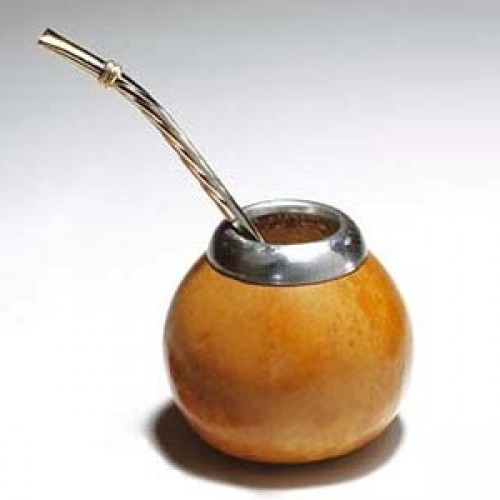
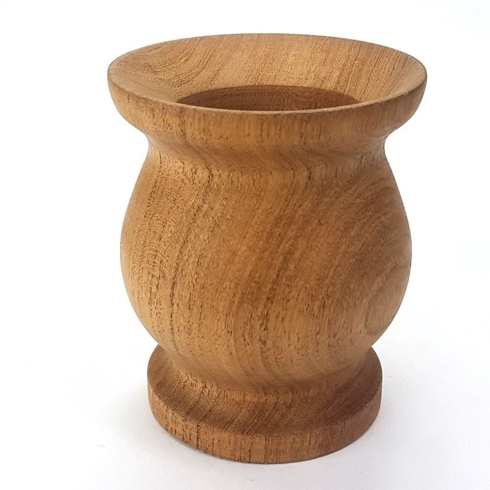
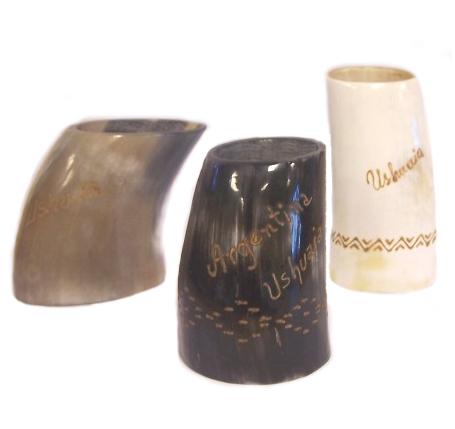
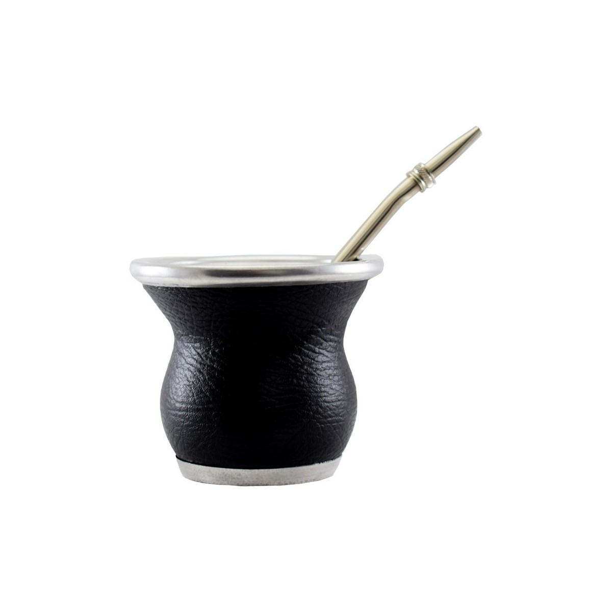
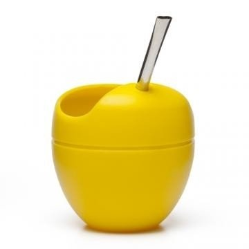
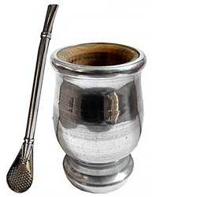

Mate de Calabaza: El mate de calabaza, se considera el mate tradicional, hecho del fruto de la planta llamada Legenaria Vulgaris y en México es conocida como bule. Este fruto es seleccionado, ya que no todos servirán para un Mate y para su mejor aprovechamiento se le puede hacer el corte, o BOCA del mate, en la parte superior, inferior o a un lado. Ademas en ocasiones se les fabrica una base o patas para su apoyo en caso de que naturalmente no se consiga. Este Fruto tiene que ser secado y curado para poder hacer uso como Mate y dependiendo del corte de la calabaza variará su nombre para identificarlos: Mate porito, mate galleta, mate porongo.
Mate de Madera: Se pueden encontrar elaborados de diferentes tipos de madera como puede ser el Algarrobo, el Palo santo, la Canela, el Roble, la Caoba, entre otras. Los más importante de éstas, es que sean maderas duras o semi duras y no muy aromáticas que interfieran de manera agresiva en el sabor final del Mate. También deben de ser curados antes de su uso para evitar grietas en la madera que dañen nuestro Mate. Existen diferentes formas de hacerlo. Da clic en este link Cómo curar un mate.
Mate de cuerno de Toro: Este mate está hecho con el cuerno o asta de los toros o en ocasión de alguna vaca. No es un mate muy común, es mas bien una rareza, ya que su tratamiento o curado para comenzar a utilizarlo es largo y tedioso ya que se debe de limpiar bien el interior del cuerno hasta que tenga tamaño suficiente y curarlo hasta quitar por completo el olor natural del animal. También conocido con el nombre de Guampa, de origen Guaraní, los primeros tomadores de Mate antes de la conquista española.
Mate de Vidrio: Este tipo de mate es muy común en estos tiempos, gustan mucho tanto por la facilidad en su uso, por no tener que curarlo como por sus diseños novedosos y personalizados. Tamaños, formas, colores y diseños son parte de sus beneficios. Son más usados por la gente joven pero están entrando en el corazón de los viejos mateadores que dejan reconocer todas sus ventajas.
Mates de Silicona: El consentido de los viajes y preferidos de los nuevos mateadores, sin paradigmas y sin temor de ser visto. La practicidad para vaciarlo, lavarlo y llevarlo hasta los lugares mas lejanos, junto con el diseño y colores vivos lo ponen en la mira de todos los Mates. Debemos de decir que el BPA sea tal vez su peor enemigo, debemos de buscar mates de silicon libres de este agente toxico. Mates Mateo lo logró.
Mate de Metal: Podemos encontrar mates de varios tipos de metales o aleaciones. Los de Alpaca, los de plata y hasta apliques con oro los podíamos ver en la época de la conquista de América con mucha frecuencia. Hoy ya no se usan, la mayoría están como antigüedad. Los mates de peltre son de la época de los 80´, se hacían con asas por el calor y en la actualidad los de aluminio o acero inoxidable están siendo reconocidos por su capacidad de mantener el frío, en el caso del Tereré y algunos con novedosos colores están tomando simpatía entre los mas jóvenes.
